1The concept: an electrochemical copper pump
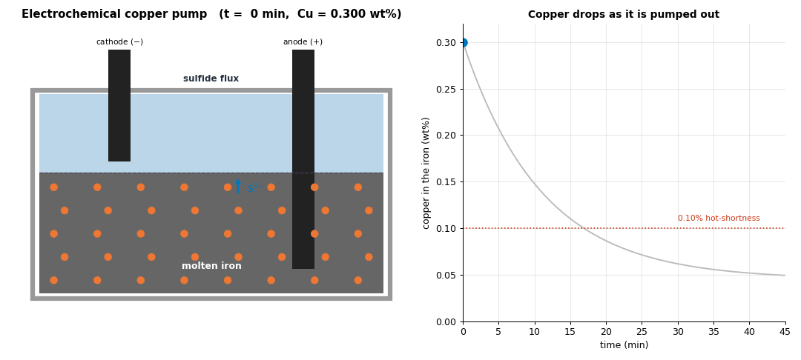
What's happening. Two electrodes dip into a molten sulfide flux on the molten iron: an anode (+) where copper dissolves off the steel, and a cathode (−) where it plates out. Drive a current and copper is pumped from the iron, through the flux, to the cathode.
The governing relation. The pumping rate follows Faraday's law — molar copper removed per second scales with current $I$ and the fraction copper actually carries:
with charge $z=1$, Faraday constant $F$, and the transference number $t_{\mathrm{Cu}}$. Everything that follows is about whether $t_{\mathrm{Cu}}$ and mass transport let this ideal hold.
2Inside the cell: copper migrating to the cathode
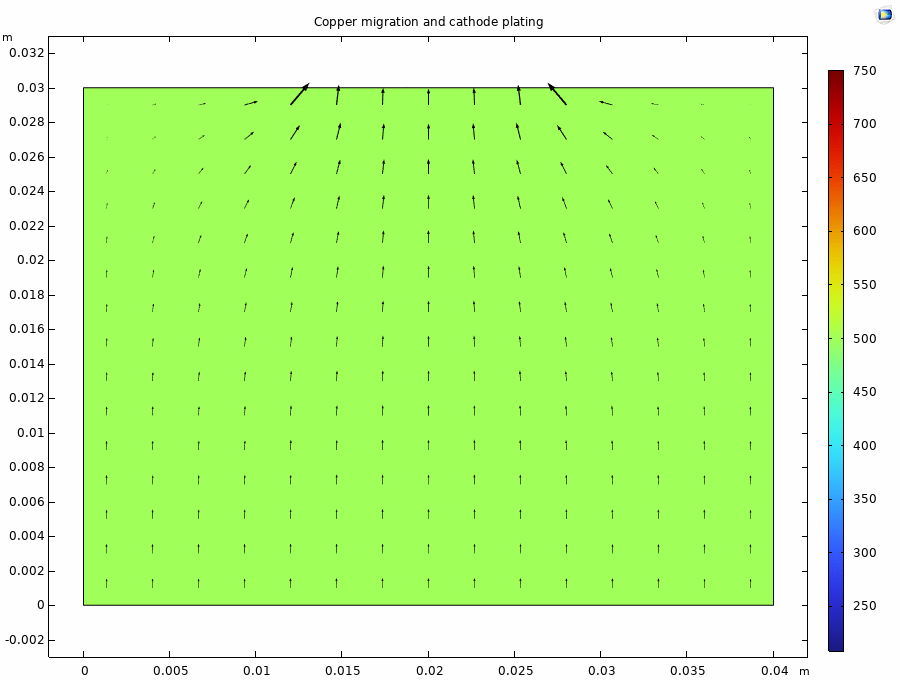
What's happening. The simulated copper field. Copper drifts toward the cathode, leaving a depletion plume — the plating signature.
The governing equation. Four transport mechanisms at once, a Nernst–Planck balance with a chemical sink:
diffusion, migration (the voltage-driven term), flow, and chemical capture $k_{\mathrm{cap}}$.
3Why you need a stirrer
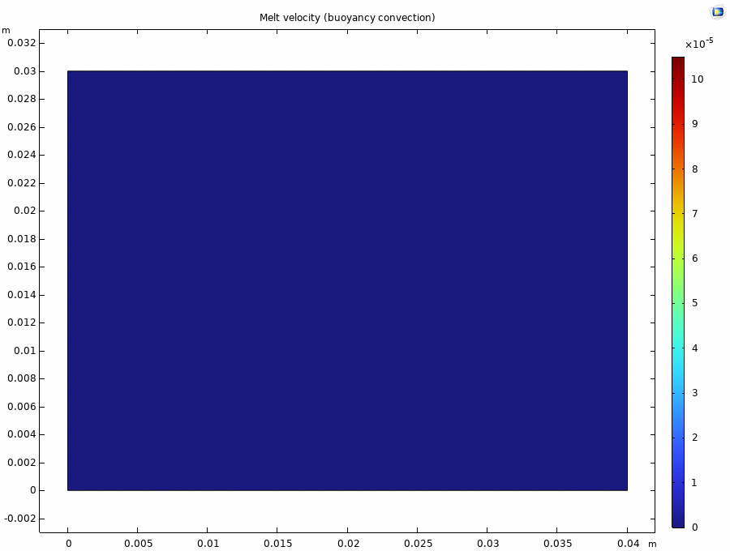
What's happening. Natural convection is far too weak to carry copper to the cathode; it has to crawl there by diffusion. This is the visual reason the route is transport-limited and why a real furnace needs a motor-driven stirrer.
The governing equations. Incompressible flow with Boussinesq buoyancy:
4The steady driving force (and the hidden catch)
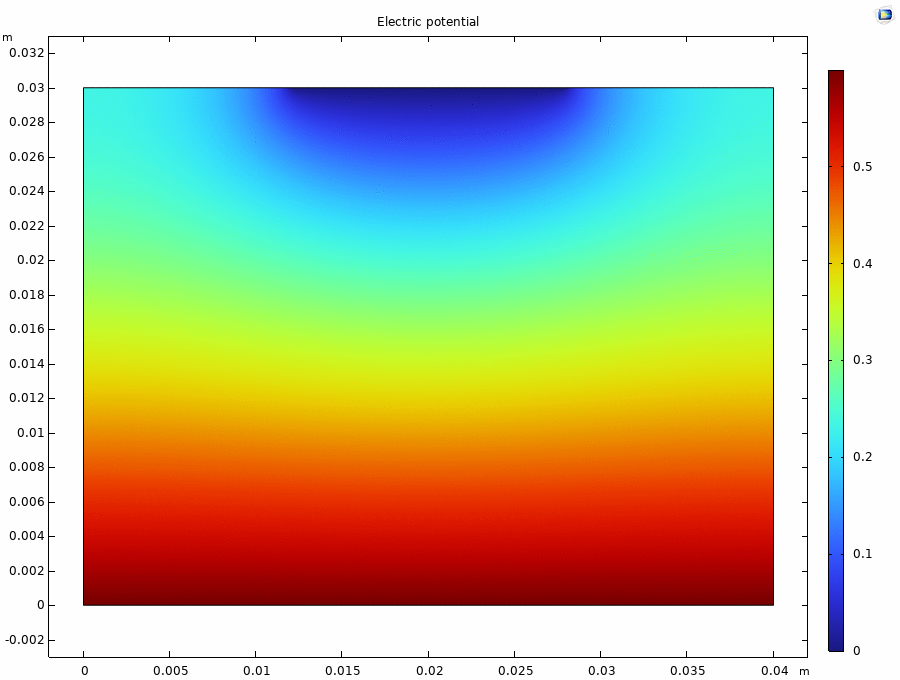
What's happening. The driving voltage is clean and constant. The catch: in a real sulfide melt most current leaks through electrons, not copper ions.
Molten sulfide mattes are predominantly electronic conductors (measured electronic transference 0.73–0.85), so $t_{\mathrm{Cu}}$ is small — copper rides only a fraction of the current.
5Energy is not the barrier
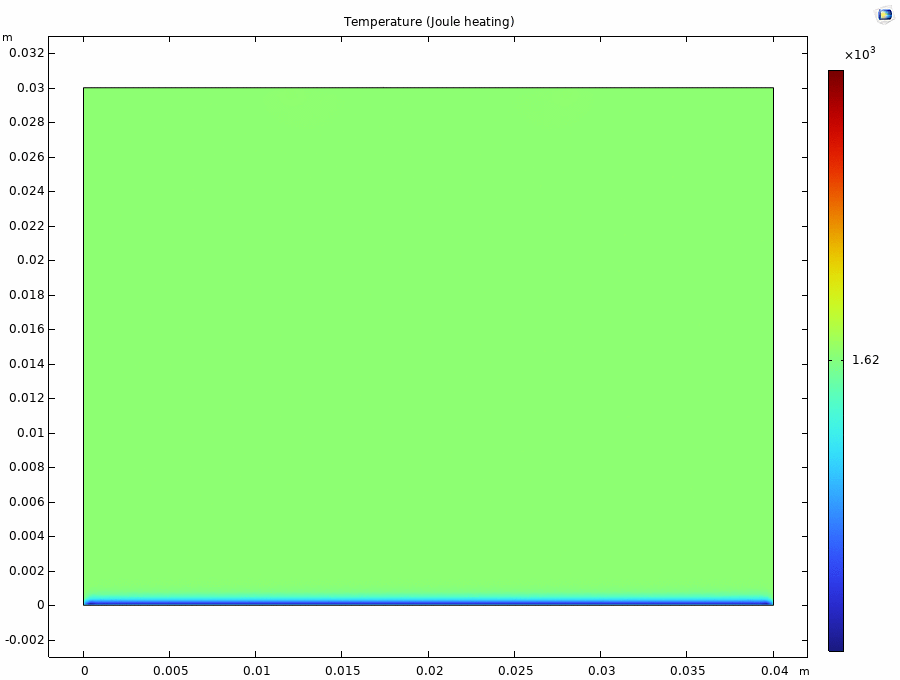
What's happening. Resistive heating is negligible against the furnace, so the route is cheap to power. The bottleneck is transport and electronic leakage, not wattage.
6The deposit, literally growing
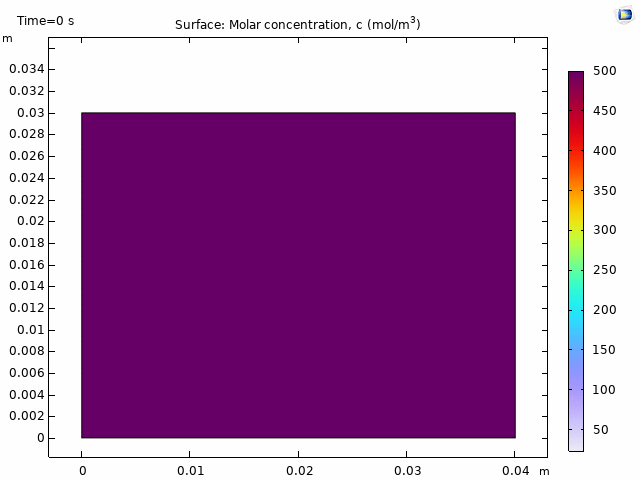
What's happening. A deforming-mesh (ALE) model where the cathode surface advances by Faraday's law as copper deposits:
Honest note. The real 30-min deposit is microns thin; the growth is scaled up so you can see it. The picture is true; the thickness is exaggerated.
What Part 1 tells you
Panels 1–2 make electrochemistry look like the answer; Panels 3–6 are the honesty check: the melt is nearly still (3), most current leaks through electrons (4), energy is a non-issue (5), and the deposit forms only at the rate the physics allows (6). Copper does plate — the question Part 2 settles is how much, and what limits it.
7The ceiling: a surface cannot out-remove a volume
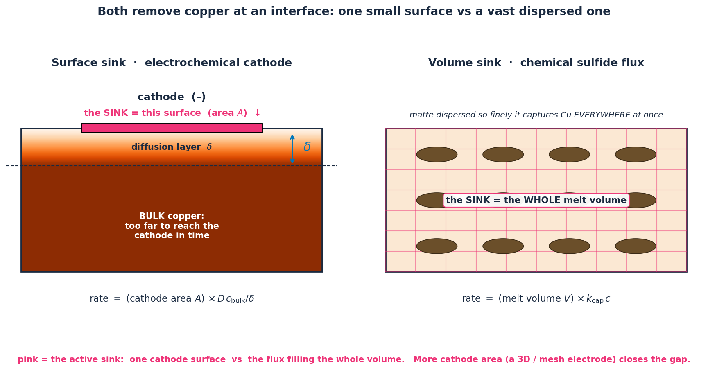
What's happening. Two limits stack. (1) Local: copper plates only as fast as it diffuses across the depletion layer $\delta$ — the limiting current
Past this, more voltage just flows on the supporting ions, plating no extra copper. (2) Geometric: the cathode removes copper over its surface area $A$ ($\text{rate}=A\,Dc/\delta$), while the dispersed flux captures it throughout the whole melt volume $V$ ($\text{rate}=V\,k_{\mathrm{cap}}\,c$). A small surface cannot beat a volume — which points to the honest fix: raise cathode area (a 3D / porous electrode), or stir to thin $\delta$.
7bThe rigorous check — a dedicated Butler–Volmer solve
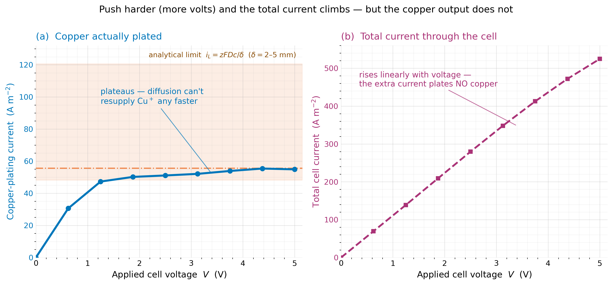
What's happening. To answer "is this just a hand-built model telling us what we asked?", we rebuilt the electrochemistry in COMSOL's dedicated module and committed to a prediction before running: the copper-plating current must flatten while the total current keeps climbing. It held — the plating current pins near 0.005 A/cm², inside the analytical $i_{\lim}=zFDc/\delta$ band, while the total runs off linearly because the inert ion carries the slack.
Why it's believable. The model was never told the diffusion-layer thickness; the plateau inverts to $\delta\approx4$ mm, exactly right for a quiet cm-scale melt. And because $i_{\lim}\propto c_{\text{bulk}}$, our dilute copper plates ~500× slower than the concentrated copper sulfide of the MIT extraction work (2.5 A/cm²) — the right factor, for the right reason.
7cThe fields, from the rigorous cell — and an honest correction
Three native COMSOL fields from the dedicated Butler–Volmer cell, each a separate physical quantity. In every one, the anode is at the bottom and the cathode at the top.
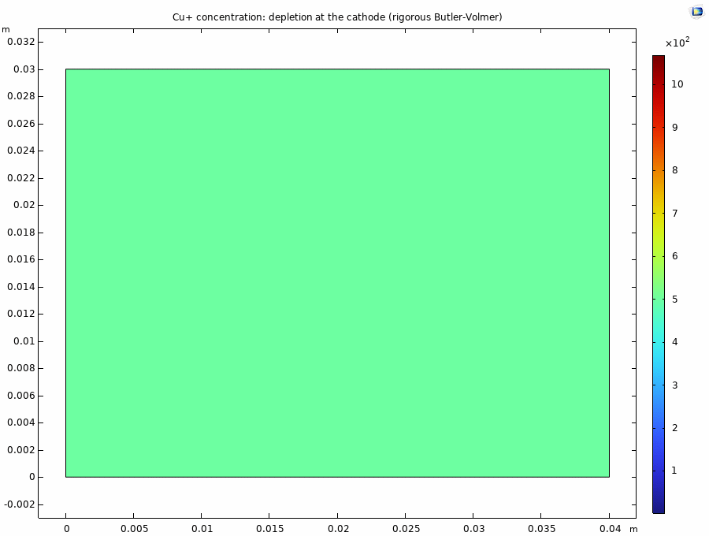
Cu⁺ concentration. The arrows point up — copper migrating toward the cathode. The color is the tell: red/high at the cathode (top), blue/low at the anode (bottom). Copper is piling up where it plates and draining from where it dissolves.
Potential. High (red) at the driven anode on the bottom, zero (blue) at the cathode on top. This smooth top-to-bottom gradient is exactly the force that pushes Cu⁺ upward — it is the migration you see as arrows in 7c-i.
Current density. Fairly uniform through the bulk electrolyte, intensifying in a thin band right at the electrode surfaces where the reactions happen. This is the ohmic current — most of which, in a real matte, leaks through electrons rather than plating copper (Panels 4, 9).
Honest caveat. This single-cation idealization (Cu⁺ as the only mobile carrier) exaggerates the one-sided sweep; a real cell with a supporting electrolyte would not deplete so asymmetrically. The robust conclusion is the transport limit, not the exact spatial pattern.
8The flux alone hits a floor; the pump removes it
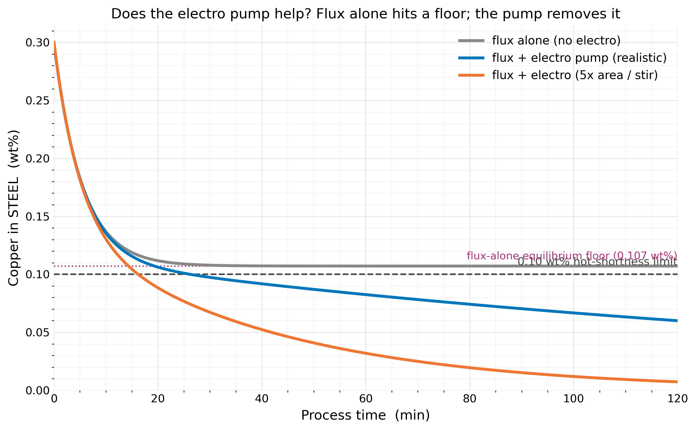
What's happening. The chemical flux and the electro pump are not independent adders — they act in series: the flux moves copper steel → matte, and the pump (whose electrolyte is that matte) moves it matte → cathode. So we track two reservoirs:
The result. The flux alone saturates at a hard floor (the matte fills, the partition stops pulling): at a 10% dose it parks at 0.107 wt% — above the 0.10 wt% limit, forever. The electro pump removes that floor by draining copper from the matte, keeping the partition alive so the steel keeps giving copper up. Its real value is not "+X% parallel removal" but converting a saturating sink into one that can reach spec, while recovering copper as metal instead of burying it in slag. The catch — the drain is mass-transport capped (Part 2), so the benefit is real but rate-limited.
9Two ways to fix the leakage — and why neither is enough alone
What the leakage is. In an ordinary electrolyte, current is carried by ions — and moving ions do useful work (Cu⁺ travels to the cathode and plates). But molten sulfide matte (Cu₂S–FeS) is a semiconductor: it also conducts by electrons, like a partial short circuit. So a large share of the applied current is just electrons flowing straight through, carrying no copper. The useful fraction is the transference number — and in these melts it is only ~0.12–0.34, meaning roughly 70–90% of the current leaks as electrons. The Faradaic efficiency is that same fraction: at baseline only ~20% of the current actually plates copper.
The two fixes. One adds ionic carriers; the other blocks the electrons. The numbers below are from our COMSOL sweeps:
| Fix | How it works | Faradaic efficiency | Cu output (vs flux) |
|---|---|---|---|
| BaS supporting electrolyte | adds an ionic compound → more ion carriers, and dilutes the semiconductor | 0.20 → 0.67 | 0.24 → 0.68 |
| Electron-blocking layer | a cathode barrier that stops electrons but lets ions pass | 0.20 → 0.96 | 0.24 → 0.48 |
The four efficiency/output numbers are model-derived (our COMSOL sweeps — illustrative). The ~9% below is measured in the literature. "Cu output (vs flux)" is normalized to the chemical sulfide flux = 1.0, so both fixes, at 0.68 and 0.48, still come in below the flux.
Why the columns disagree. Electron-blocking reaches the higher efficiency (0.96 — almost no wasted current) yet the lower copper output (0.48), while BaS, at a worse 0.67 efficiency, removes more copper (0.68). The reason: BaS adds ionic carriers (more ions available to ferry copper), whereas electron-blocking only stops the leak without adding any carriers.
10Induction stir + copper partition, fully coupled
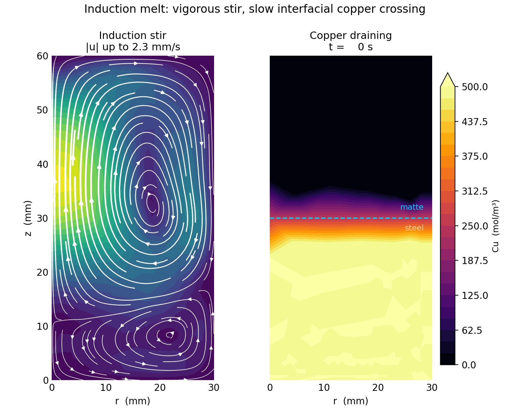
What's happening. This is the realistic furnace with all five physics coupled at once: the induction coil's AC field drives eddy currents in the steel (electromagnetics), which produce Joule heat (heat transfer) and a Lorentz body force that stirs the melt (Navier–Stokes flow), and that stir carries copper to the steel/matte interface where it partitions into the matte (species transport). No fudged diffusivity — the real $D\approx5\times10^{-9}$ m²/s.
The governing chain. Frequency-domain Maxwell → cycle-averaged Lorentz force → momentum → species transport with a partition drift:
Validated numbers: skin depth 18.9 mm (field penetrates the 30 mm crucible → it stirs), stir velocity 2.2 mm/s, mass conserved to 0.9%.
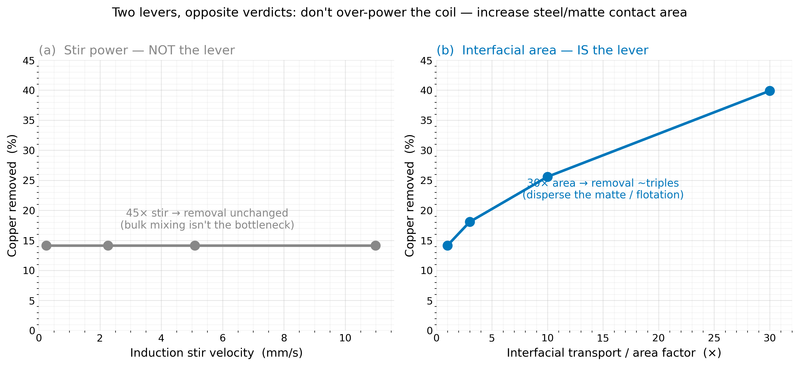
Provenance: the electromagnetics, Joule heat, and Lorentz-stir are first-principles Maxwell + Navier–Stokes. The partition is modeled as an affinity drift calibrated to the CALPHAD partition L≈18 (TCOX14). Material properties are realistic but untrusted-unless-confirmed.
11Dispersed droplets: same matte, split into pieces
The two-lever result said interfacial area is the scalable knob — but that sweep used a transport factor as a stand-in for area. Is that a fudge, or real geometry? This panel settles it by modeling the matte as actual droplets. The total matte volume is held fixed; only the number of droplets changes. More, smaller droplets = more steel/matte interface for the same amount of flux.

Splitting one matte blob into N droplets of the same total volume multiplies the interface perimeter as $P = 2\sqrt{\pi N A_m}\propto\sqrt{N}$. If area is truly the lever, removal should climb with that interface. It does — and then some:
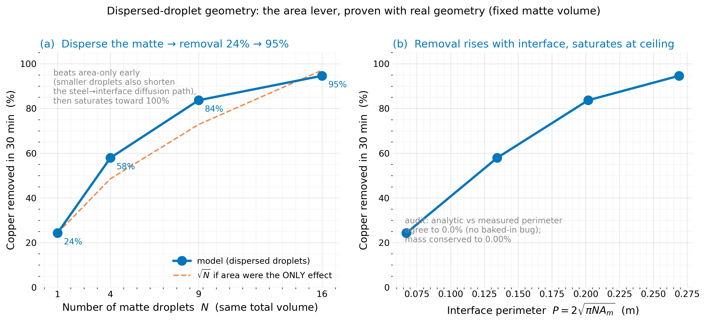
Provenance: the droplets are represented by an affinity field on a single mesh (not meshed circles), with the same migration-partition mechanism as Panel 10 and a prescribed divergence-free stir. The √N interface scaling is verified two independent ways; mass is conserved to 0.00%. Idealized geometry (regular droplet grid, fixed sizes), so treat the absolute numbers as illustrative and the trend as the result.
Guidance for the Fontana-lab melt
- Area is the scalable lever — emulsify the matte. The model says removal rises ~linearly with steel/matte contact area but only as √(stir). So the single highest-leverage move is to break the matte into fine droplets dispersed in the steel, not to crank the coil. Droplet breakup is set by the Weber number $We=\rho u^2 d/\sigma$: emulsify with gas injection (argon lance / porous plug — the standard ladle-metallurgy method, rising bubbles shear the interface) and/or a high-shear impeller, and/or lower the steel/matte interfacial tension $\sigma$ with flux composition. Induction stir alone is too gentle to emulsify — that is exactly why panel (a) saturates.
- Stirring is still mandatory. The route is transport-limited (Panels 3, 7). Unstirred, copper takes days to reach an interface; a stirred ~0.5 mm boundary layer makes it minutes. Use a motor-driven graphite rod with logged RPM — but treat stir as the floor, emulsification as the lever.
- Lead with a high-Na₂S sulfide flux — it does the bulk removal (partition ~18). Watch the dose: too little flux and the equilibrium floor sits above 0.10 wt% (Panel 8), so use enough matte or pair it with the pump.
- Keep FeS low. Iron in the matte drives the electronic leakage that wastes the electro current (Panel 9).
- Electro pump = co-process, not main remover. Its job is to clear the last gap to spec and recover copper as metal — only worth it once you are flux-limited.
- Run a no-additive control melt under identical conditions, and measure Cu wt% before/after (OES or XRF). Fe₂O₃ powder as an oxygen vehicle, open air.
Characterizing interfacial area (so the "area lever" is measurable, not hand-waved)
- Quench & section. Rapidly quench a melt sample, polish, image the frozen matte droplets (optical / SEM) → droplet-size distribution → specific area $a=6\phi/\bar d$. This is the direct readout of how well you emulsified.
- Removal kinetics. Sample Cu vs time and fit $dC/dt=-k_m a\,(C-C_\mathrm{eq})$ → the lumped $k_m a$. Repeat across gas-flow / impeller-speed settings → that is the area-lever curve, measured. It tests the model's linear-in-area, sublinear-in-stir prediction head-on.
- Cold model (optional, cheap). Transparent water (steel) + oil (matte) with matched density/viscosity/interfacial-tension ratios; high-speed video of droplet breakup vs shear → a Weber-number correlation $\bar d(u)$ you can apply back to the melt.
References & data provenance
Electrochemistry / kinetics inputs obtained & filed:
- Sokhanvaran, S.; Lee, S.-K.; Lambotte, G.; Allanore, A. "Electrochemistry of Molten Sulfides: Copper Extraction from BaS–Cu₂S." J. Electrochem. Soc. 163(3), D115–D120 (2016). Source of the confirmed E_eq (half-wave −0.014 to −0.019 V) and the 2.5 A/cm² operating point.
- Sahu, S. K.; Chmielowiec, B.; Allanore, A. "Electrolytic Extraction of Copper, Molybdenum and Rhenium from Molten Sulfide Electrolyte." Electrochimica Acta (2017). ScienceDirect
- Yang, L.; Pound, G. M.; Derge, G. "Mechanism of Electrical Conduction in Molten Cu₂S–CuCl and Mattes." JOM 8, 783–788 (1956) = Trans. AIME 206. DOI 10.1007/BF03377767. Primary proof that mattes conduct by electrons and that ionic additions suppress it — the basis of the leakage argument.
- Daehn, K. E.; Serrenho, A. C.; Allwood, J. M. "Finding the Most Efficient Way to Remove Residual Copper from Steel Scrap." Metall. Mater. Trans. B 50(3), 1225–1240 (2019). DOI 10.1007/s11663-019-01537-9. The canonical strategy review — independently concludes sulfur is the only element that binds copper, and that evaporation is kinetically hopeless.
- Methodology for electronic transference numbers in molten sulfide melts (electronic 0.73–0.85; ionic 0.12–0.34). MIT, DSpace 1721.1/111225.
- Electroextraction of Cu from molten iron (Na₂S–FeS + DC), ISIJ Int. 60(11), 2020; electro-reduction in Cu-removal slag (~9% Cu current efficiency), ISIJ Int. 64(9), 2024; Fuwa & Yamamoto, matte conductivity.